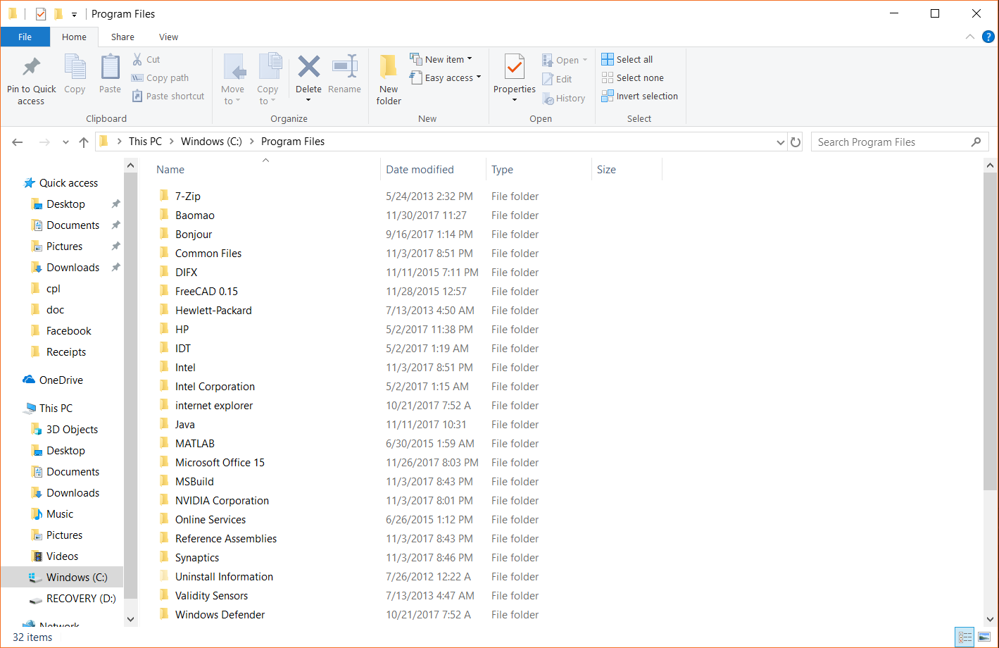
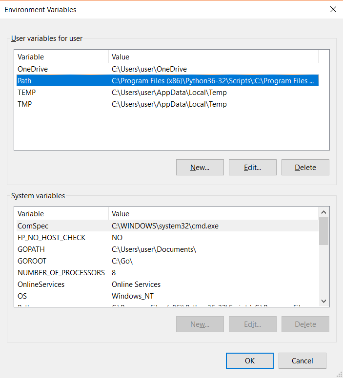
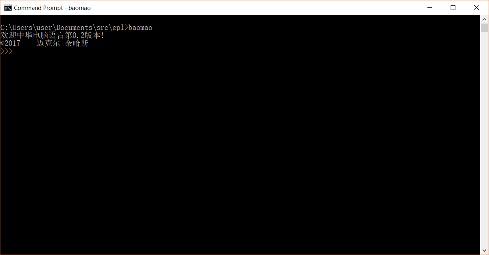
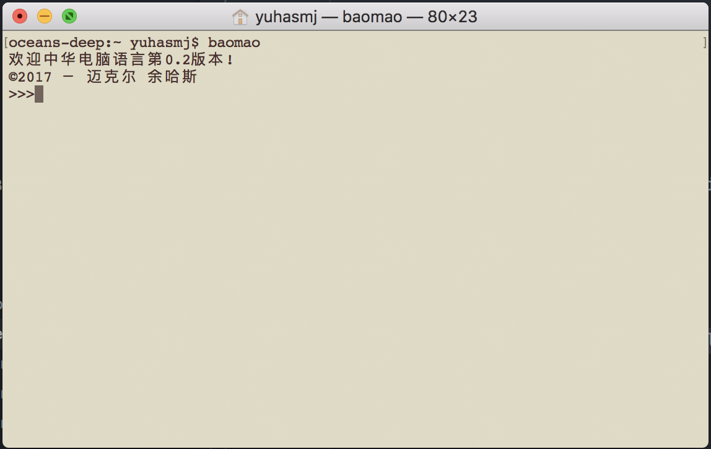
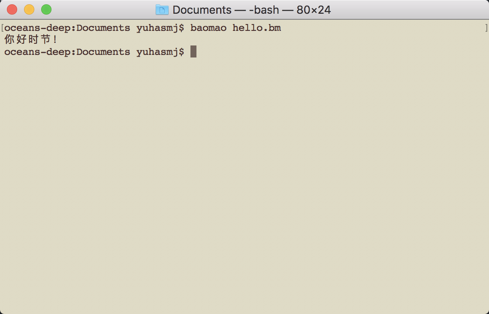
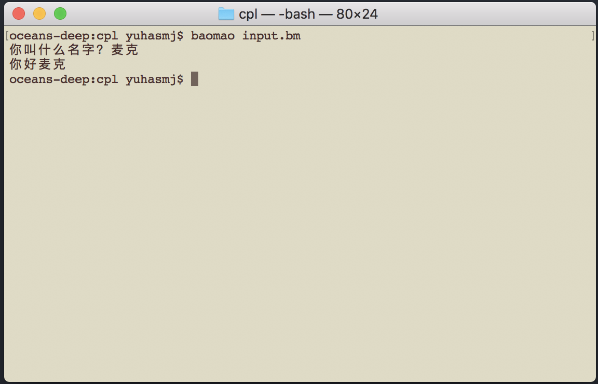

1.) In your "C:\Program Files" Directory create a folder called "Baomao".
2.) Open control panel and search for 'path'. Press 'Edit environment variables for your account'. In the window that appears, select the Path variable and press 'Edit'. Press 'New' and enter C:\Program Files\Baomao. Press okay and save changes.
3.) Copy baomao.exe from cpl\bin\x86\windows10\baomao.exe into C:\Program Files\Baomao\baomao.exe
4.) Open terminal and type 'baomao'. You should see the following appear: 
1.) Open terminal and copy the baomao binary file into the /usr/bin directory:
sudo cp ~/git/cpl/bin/x86/linux/baomao /usr/local/bin/
2.) Type 'baomao' and try to run the program. You should see the following appear:
You can use your favorite text editor or IDE to create Baomao programs, but I recommend using Atom. I have created an atom package that includes syntax highlighting to make reading and writing code easier. This section details the installation process.
1.) Download and install Atom on your system. Go to https://atom.io
2.) Clone my baomao language package for Atom:
git clone https://github.com/m-yuhas/language-baomao.git
3.) Copy the language package into the .atom folder for you Atom installation. Terminal commands are listed below, but you can do this using the GUI if that is more comfortable. On Linux and MacOS:
cp -r cp -r ~/git/language-baomao/ ~/.atom/packages/language-baomao/On Windows:
mkdir .atom\packages\language-baomao
xcopy git\language-baomao .atom\packages\language-baomao /s /e
Let's create a basic program to test everything. Open up your favorite IDE and create a file with the following line:
输出（“你好时节！”）Save the file as 'hello.bm'. If you are using Atom and have the language package installed you should now see 输出 appear in blue. To run open terminal and type:
baomao hello.bmYou should see the following output: 
Now let's make a program that get's user input. We can do this with the 输入 function. 输入 will display a string in the console and collect all user input before the return key is pressed. This data will be stored as a string. Try it with the example program below:
姓名 《 输入（“你叫什么名字？”）Notice also that we can use the '+' operator on two strings to concatenate them. Notice also that we can set a variable using '《'. Instead of using '=' to set a variable like in other programming language, an arrow (《) is used to show that the result of the expression on the right is being stored into the variable on the left. This helps students learning programming reinforce the fact that a variable acts as a storage container for a value. 
输出（“你好”+姓名）